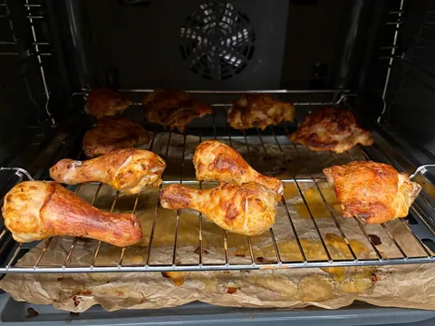
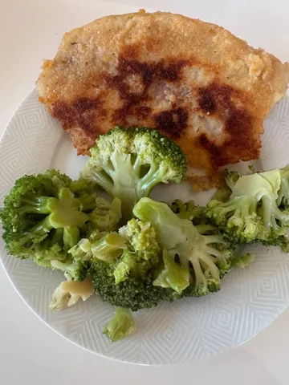
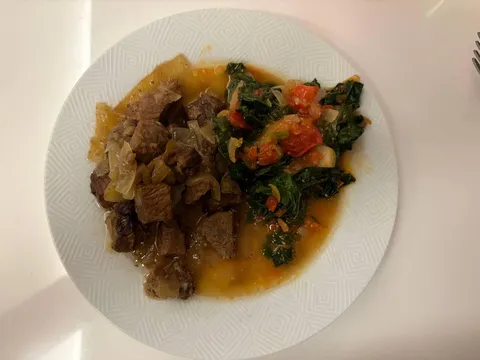
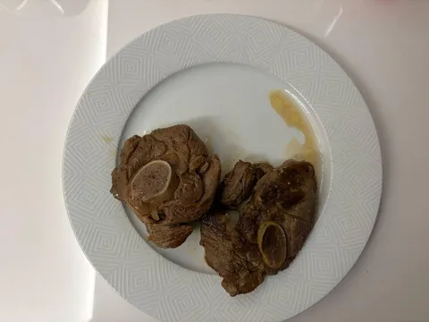

Что мы знаем о Кении? Да почти ничего. Относительно развитая, но лишь по африканским меркам, страна в восточной части экваториальной Африки. Саванны, слоны, жирафы, львы, бегемоты, зебры, бородавочники - возможно, там снимался Король лев. Немного населения - пара крупных городов и много племен, включая масаи. Интересно, что, по одной из версий, примерно там появился предок человека. В общем, почти колыбель человечества.
С едой там как-то сложно. В основном кухня устроена по принципу "что поймал - то и съел, зажаренное на костре". Ну окей, еще курица, говядина, баранина, какие-то лепешки и овощи. И, к сожалению, мямо зебры не обнаружилось даже в большой Лавке. Поэтому наши традиционные кулинарные эксперименты в этот раз были не вполне точны - лишь "по мотивам" кенийских блюд.
- Говядина с луком в сопровождении шпината - да, в Кении едят шпинат, просто называют его как-то иначе, сукума-вики - что-то типа зеленой капусты.
- Курица, aka куку-чома - в общем-то, просто курица. Только костер разводить в квартире не стали, но хоть в духовке зажарили в усмерть.
- Баранина - иногда это просто баранина, даже без специй, да и откуда в саванне специи?
- Качумбер - он же салат из помидоров с луком и лимонной заправкой.
- Тилапия и рис на кокосовом молоке - вообще в Кении тилапию с головой и чешуей кидают в костер, но мы так почему-то не стали делать.
В общем, не самый правдоподобный эксперимент, но и так бывает.



